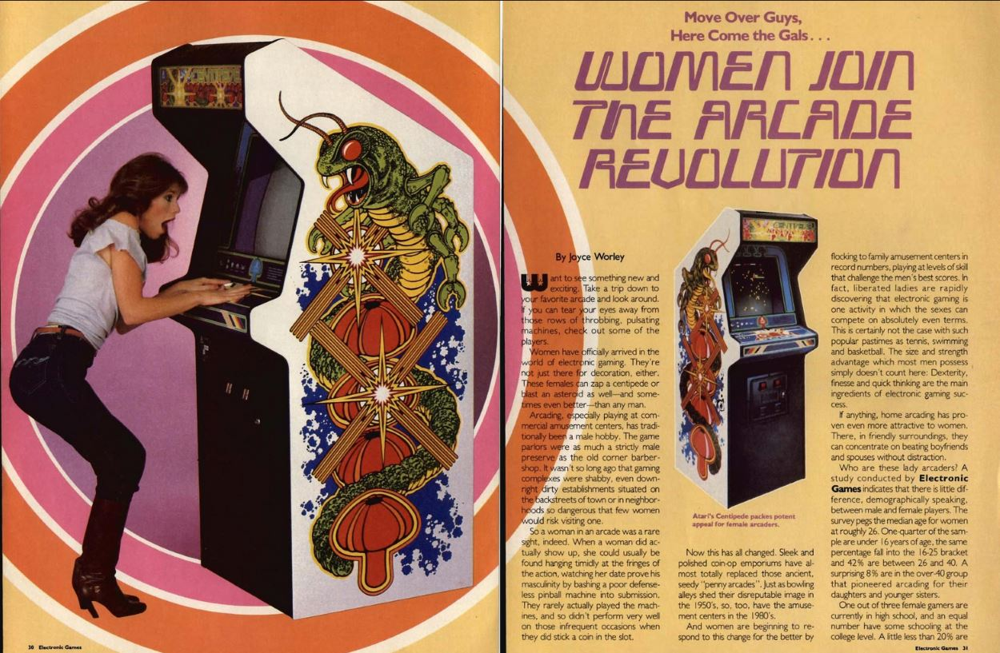
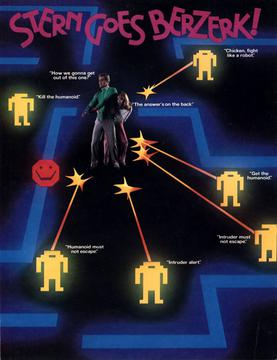
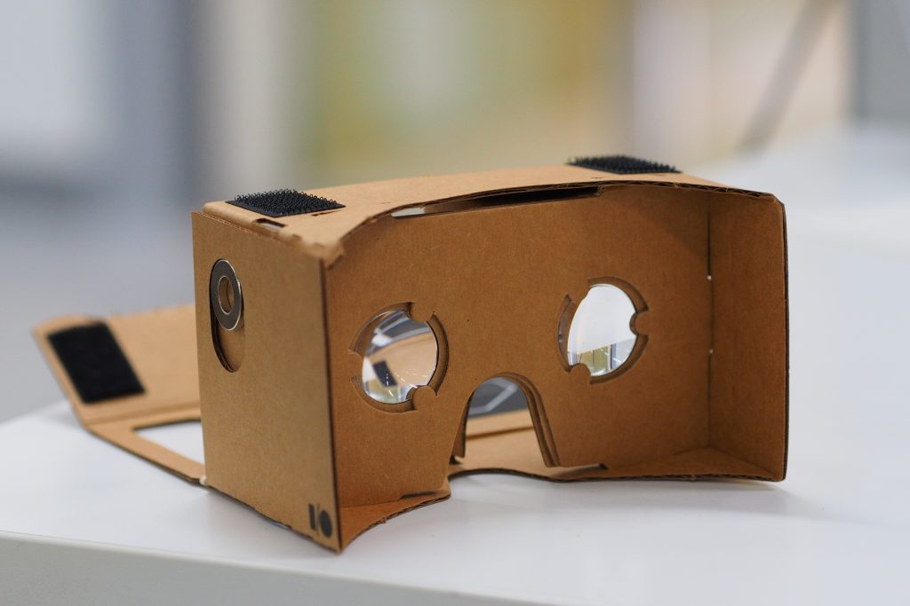
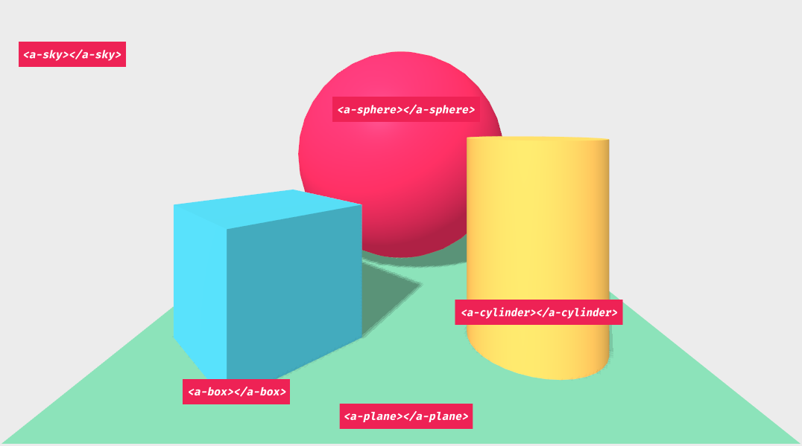

- 1980
- Toru Iwatani
- Originally named Pakkuman, based on "paku paku taberu"
- Multiple versions
- Highest-grossing and best-selling game series of all time: +$14 billion
Pac-man and women
- Arcade games targeted for men
- Non-violent, cheerful video game
- Based on what women like to do in their time...
Electronic Game Magazin in 1982:



- Arcade game
- Made by Virtuality in 1996
- Visette virtual reality visor (276x372 resolution / eye)
- Moveable joystick
- Tracking was done with magnets
- Stand-up and sit-down versions
Google wanted it cheaper!
WebVR
- Mozilla
- Spring of 2014
-
Goals:
- Detect VR devices
- Query capabilities
- Poll position and orientation
- Render with appropriate framerate
WebVR becomes WebXR
- Addition of AR
- Proper emulator extensions
https://blog.mozvr.com/webxr-emulator-extension/
Game features
- Maze
- Move within the maze
- Add 1 ghost
- Collecting dots
The technology we'll use

Features
- HTML
- Declarative, extensible and composable structure to three.js
- Supports most VR headsets
- Visual inspector

Building a scene
